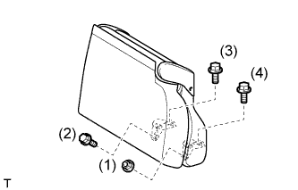
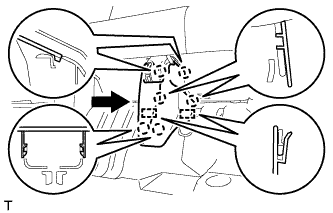
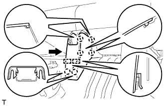

ЗАДНЕЕ СИДЕНЬЕ № 1 В СБОРЕ (для моделей с опускаемым сиденьем раздельного типа 60/40 с левой стороны) > УСТАНОВКА |
| 1. УСТАНОВИТЕ ЛЕВОЕ ЗАДНЕЕ СИДЕНЬЕ № 1 В СБОРЕ |
Установите сиденье в салон.
Временно установите сиденье и закрепите его 3 болтами и гайкой.
|  |
Затягивайте болты и гайку в порядке, показанном на рисунке.
| 2. УСТАНОВИТЕ НАКЛАДКУ ПЕТЛИ ПОДУШКИ ЗАДНЕГО СИДЕНЬЯ № 3 |
Введите в зацепление захват, чтобы установить крышку.
| 3. УСТАНОВИТЕ НАКЛАДКУ ПЕТЛИ ПОДУШКИ ЗАДНЕГО СИДЕНЬЯ № 4 |
Введите в зацепление захват, чтобы установить крышку.
| 4. УСТАНОВИТЕ НАКЛАДКУ ПЕТЛИ ПОДУШКИ ЗАДНЕГО СИДЕНЬЯ № 1 |
Верните сиденье в вертикальное положение.
|  |
Закрепите 2 направляющие и 6 захватов, чтобы установить накладку.
| 5. УСТАНОВИТЕ НАКЛАДКУ ПЕТЛИ ПОДУШКИ ЗАДНЕГО СИДЕНЬЯ № 2 |
|  |
Закрепите 2 направляющие и 6 захватов, чтобы установить накладку.
| 6. УСТАНОВИТЕ ЦЕНТРАЛЬНЫЙ ПОДГОЛОВНИК ЗАДНЕГО СИДЕНЬЯ В СБОРЕ |
Установите подголовник.
| 7. УСТАНОВИТЕ ПОДГОЛОВНИК ЗАДНЕГО СИДЕНЬЯ В СБОРЕ |
Установите подголовник.